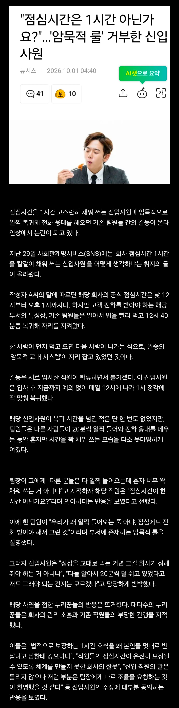

"점심시간은 1시간 아닌가요?"
댓글
밥시간 건드는건 진짜 사람새끼가 할 짓이 아닌데
그러게 점심시간 한시간은 아예 법으로 보장된 시간인데 ㅋㅋㅋ
4시간 근무 30분 휴식은 법적으로 보장되어있습니다...
그걸 유도리있게 한시간으로 맞추고 8시간 근무하는거 아니였나..
법적으로 당연히 문제 없지
근데 어느 그룹이건 사람이 모인 곳에는 부조리한 부분이 존재하고
서로 간에 암묵적으로 지키는 게 있을 수 밖에 없음
그걸 따르기 싫다면 혁명가가 되던가 나가던가임
솔직히 내가 개꼰대라 그렇지만 20분때문에 자기 평판 깎아먹는거라고 생각함
나 지금 지방 ㅈ소 정규직으로 재직한지 1년 좀 넘었는데 3개월째 15분만에 밥 먹고 생산직이랑 교대해주고 1시간 동안 생산직 일 대신해서 하고 있는데 진짜 개 ㅈ같아서 이직 생각 ㅈㄴ 나는데 어캄? 설비가 중간에 멈추면 안되는 설비라 어쩔 수 없이 내가 막내라서 교대하는데 이거 맞냐? 그렇다고 퇴근 일찍 시켜주는 것도 아님
다 따져보는 거지,
더러운 거 당장 참으며 다니는 게 이득인가, 때려치우는 게 이득인가, 혹은 관둔다 했을 때 너를 잡기 위해 저 쪽이 다른
당근을 제시할 가능성이 있는가 등등
그 담에 결정해야지
9 to 6이면 점심시간 40분 앞뒤로 쉬는시간 10분 10분해서 총 1시간 쉬는게 법적최소치 내에서 짠 일반적인 시간표로 알고있음
회사마다 밥시간/중간 쉬는시간 비율은 다를수있어도 어지간하면 총 1시간 넘게 쉬는시간주는곳은 잘 못봤음
전회사 생산직은 1시간 20분 쉬긴 했음 인천쪽이었는데 근처 공단들 비슷한거 같던데 다는 모름
암묵적으로 일시킬거면 암묵적인 돈을 주던가
이건 회사가 ㅄ인데? 점심시간도 바쁘면 교대하면서 하면 되잖아 20분 깍으면서 한다고? ㅆㅂㅋㅋㅋ 공사판도 그렇게 안 한다
공사판은 저러면 인부들 연장들고 반장 뚝배기 깸
워낙 개소리라서 내용을 이해 못 하신 거 같은데, 본문 내용은 바쁘니까 교대해서 먹는다는 말임. A조 B조 나눠서 40분씩 점심 시간 쓴다고.
"응? 1시간 교대를 하면 모두 점심 시간 채울 수 있는 거 아님?"이란 의문이 든다면 당연한 거. 즉, 상사의 이야기 어디에도 점심 시간이 40분이어야 할 이유가 없음. 그냥 가스라이팅임.
니 말 보고 교대라는 말을 잘 못 쓴게 맞네 교대 내용 빼고 회사가 ㅂㅅ인데? 공사판도 그렇게 하지않는다고만 쓰는게 맞다
이건 회사가 병신임 점심시간에도 일 시켜야되면 근무시간으로 인정해줘야함
휴게시간 보장도 안해주는 좋소에 들어간자여 그 무게를 견뎌라 댓글 개꼰대들도 딱 고만한 좋소다니니까 신입이 꼬와보이는거겠지 ㅋㅋ
시발 그럼 50분마다 쉬게하고 7시간 근무로 바꾸던가 ㅋㅋ
저게 맞는거아님? ㅋㅋ 우리도 교대할일 있으면 1130~1230, 1230~1330 이렇게 무조건 1시간 채우고 점심교대하는데
노조 맛 좀 볼래?
꼬우면 해고하고 딴놈 채우면댐 ㅇㅇ
뭘로 해고하나요..
한국은 해고가 쉽지않아요
좆소에 그딴게어딧음 하는꼬라지보면 좆소저리가란데 눈치보는거보니까 얼마안갈듯
좆소가 사람 더 고용해서 점심시간 교대로 운영했어야 하는데 병신인가
맞는 말인데 저러다가 삔또 상해서 이석시간 체크 들어가면 존나 피곤해질 듯 ㅋㅋㅋ
저런 애들이 많아야 시스템이 정상화 되긴 함
현실은 그냥 수긍하고 손해보고 사는게 대다수지
서비스직도 저렇게 안하지않나 교대로 1시간 하는데
회사가 병신아님?
사실 안 지키게 하는 놈들이 병신인 시스템이지만
현실은 안 지키는 사람을 병신으로 만듬
사람 없으면 뽑아줄때까지 펑크내야 하는데
어떻게든 맞춰주니까 개선 안 됨 ㅋㅋ
노예근성 발휘하지 말고 걍 1인분만 해라
점심시간에 전화응대하는걸 냅두는 회사가 불법인데 ㅋㅋ
점심시간에도 누가 일해야 하니 이래야 한다는 말은 전형적인 개소리 가스라이팅임.
모두가 자리를 비울 수 없다면 1시간 교대로 하면 그만이지 40분 교대일 이유가 없음. 우리 직장 안내데스크 담당도 안내데스크를 아예 비울 수 없으니 11시 30분~12시 30분 / 12시 30분~1시 30분으로 1시간 교대로 밥 먹는다고 들었음. 식당이 12~13시 사이에만 여는 것도 아닌데 왜 40분 교대인데? ㅋㅋㅋㅋ
11:30~12:30/ 12:30~1:30 교대로 밥먹고와
저딴 회사 말고 좋은 회사 가게 노력좀 해야겟네
저렇게 노예근성 박는 게 진짜 악독한 점임.
회사 개차반이네
암묵적 룰로 1130-1300까지 밥먹고오는 군대가 압승이다
저런회사 입사했다가 최근에 런침
저거 휴게시간인데... 미친놈들
근로자가 자기 권리 보장받을 생각은 안하고 자진해서 노예짓 하려고 하네
솔직히 근태관리 제대로 된다는 전제 하에 점심시간은 짧으면 짧을수록 좋음
우린 점심시간 45분이고 17시 45분 퇴근인데
남들보다 15분만 일찍 나가도 지하철 혼잡도가 천지 차이임 ㄹㅇ